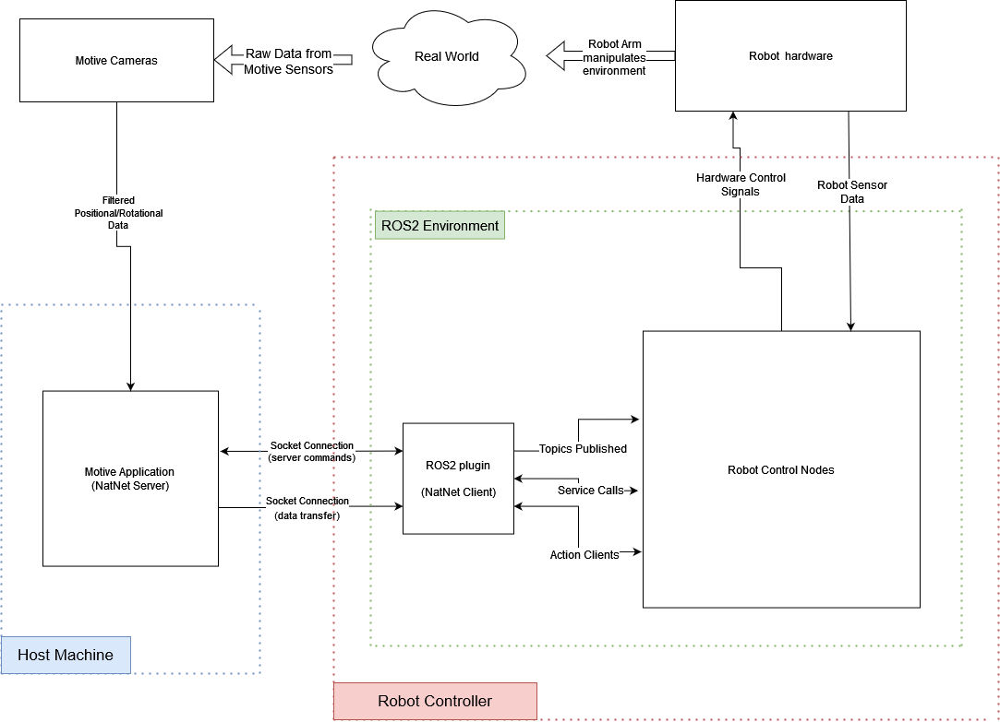
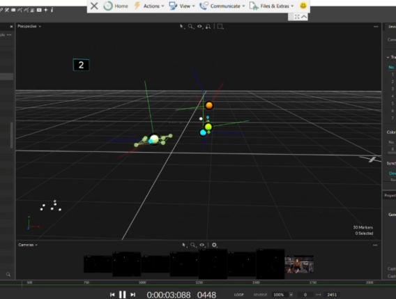

Motion-Capture Jetmax Hiwonder Robotic Arm Control
Capstone project for NaturalPoint / OptiTrack
Overview
OptiTrack builds motion capture systems that provides real-time 3D tracking of objects and people with millimeter-level accuracy. Their customers wanted to use that tracking data to drive a robotic arm automatically. Before this, moving the robotic arm required manual control, which was time-consuming and less precise without knowing the object's position.
The problem is that the two systems don't share a language. Motive knows where the markers sit in 3D space, but the robotic arm requires a different format of data. Therefore, our team built the layer in between, a set of ROS2 packages that reads position data from Motive and turns it into the arm movements. We built and tested it on a JetMax Hiwonder arm, with the interface designed so the same approach could extend to other robots.
My role
I was responsible for developing the jetmax_control layer, and porting the ROS1 driver to ROS2. The other four teammates owned the hardware integration, the motion capture processing pipeline, the user interface design. In detail, I built the ROS2 control interface in the jetmax_control package. The arm could already move, but nothing was connected to the motion capture data so enabling real-time control was challenging. My work published each joint angle, the gripper state, the position, and move commands.
I also worked on the demo that talks to Motive. That covers connecting the clients to the Motive server over NatNet SDK, verifying the connection, and testing the data exchange. When an object comes into range, the arm turns its base toward it using the angle between the arm vector and the object vector, then extends to hover above it. I also recorded parts of the demo video and wrote the setup documentation in the repository README.
Source: Jetson-Ros2-Packages on GitHub
Skills demonstrated
ROS2 · Python (rclpy) · C++ · Driver porting · Systems integration · Technical documentation
Impact and relevance
The packages are public on GitHub under Apache 2.0, so anyone with the same hardware can install them and run the demo from the repository. The successful porting of the ROS1 driver to ROS2 enabled integration between the motion capture system and the robotic arm.
The challenging parts were rebuilding the control layer for ROS2 when the vendor code targeted the older ROS1, and getting the connection to Motive to stay stable while the arm is moving. Both are the kind of problem I focused on, where the work is making two systems communicate effectively.
System Diagram and Visuals

